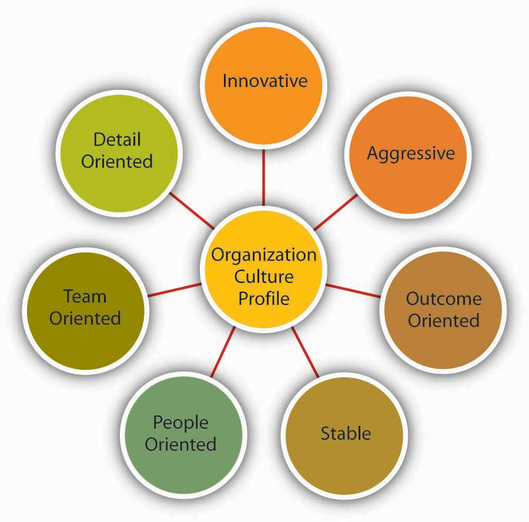
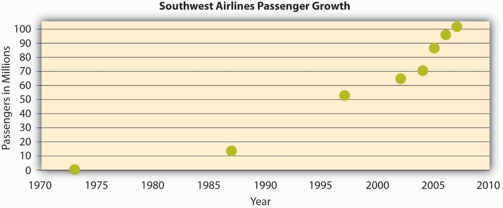

Which values characterize an organization’s culture? Even though culture may not be immediately observable, identifying a set of values that might be used to describe an organization’s culture helps us identify, measure, and manage culture more effectively. For this purpose, several researchers have proposed various culture typologies. One typology that has received a lot of research attention is the Organizational Culture Profile (OCP) where culture is represented by seven distinct values.Chatman, J. A., & Jehn, K. A. (1991). Assessing the relationship between industry characteristics and organizational culture: How different can you be? Academy of Management Journal, 37, 522–553; O’Reilly, C. A., III, Chatman, J. A., & Caldwell, D. F. (1991). People and organizational culture: A profile comparison approach to assessing person-organization fit. Academy of Management Journal, 34, 487–516.
Figure 8.6 Dimensions of Organizational Culture Profile (OCP)
Source: Adapted from information in O’Reilly, C. A., III, Chatman, J. A., & Caldwell, D. F. (1991). People and organizational culture: A profile comparison approach to assessing person-organization fit. Academy of Management Journal, 34, 487–516.
According to the OCP framework, companies that have innovative culturesCultures that are flexible, adaptable, and experiment with new ideas. are flexible, adaptable, and experiment with new ideas. These companies are characterized by a flat hierarchy and titles and other status distinctions tend to be downplayed. For example, W. L. Gore & Associates is a company with innovative products such as GORE-TEX® (the breathable fabric that is windproof and waterproof), Glade dental floss, and Elixir guitar strings, earning the company the distinction as the most innovative company in the United States by Fast Company magazine in 2004. W. L. Gore consistently manages to innovate and capture the majority of market share in a wide variety of industries, in large part because of its unique culture. In this company, employees do not have bosses in the traditional sense, and risk taking is encouraged by celebrating failures as well as successes.Deutschman, A. (2004, December). The fabric of creativity. Fast Company, 89, 54–62. Companies such as W. L. Gore, Genentech, and Google also encourage their employees to take risks by allowing engineers to devote 20% of their time to projects of their own choosing.
Companies with aggressive culturesCultures that value competitiveness and outperforming competitors. value competitiveness and outperforming competitors; by emphasizing this, they often fall short in corporate social responsibility. For example, Microsoft is often identified as a company with an aggressive culture. The company has faced a number of antitrust lawsuits and disputes with competitors over the years. In aggressive companies, people may use language such as “we will kill our competition.” In the past, Microsoft executives made statements such as “we are going to cut off Netscape’s air supply…Everything they are selling, we are going to give away,” and its aggressive culture is cited as a reason for getting into new legal troubles before old ones are resolved.Greene, J., Reinhardt, A., & Lowry, T. (2004, May 31). Teaching Microsoft to make nice? Business Week, 3885, 80–81; Schlender, B. (1998, June 22). Gates’s crusade. Fortune, 137, 30–32.
Figure 8.7
Microsoft, the company that Bill Gates co-founded, has been described as having an aggressive culture.
The OCP framework describes outcome-oriented culturesCultures that emphasize achievement, results, and action. as those that emphasize achievement, results, and action as important values. A good example of an outcome-oriented culture may be the electronics retailer Best Buy. Having a culture emphasizing sales performance, Best Buy tallies revenues and other relevant figures daily by department. Employees are trained and mentored to sell company products effectively, and they learn how much money their department made every day.Copeland, M. V. (2004, July). Best Buy’s selling machine. Business 2.0, 5, 92–102. In 2005, the company implemented a Results Oriented Work Environment (ROWE) program that allows employees to work anywhere and anytime; they are evaluated based on results and fulfillment of clearly outlined objectives.Thompson, J. (2005, September). The time we waste. Management Today, 44–47. Outcome-oriented cultures hold employees as well as managers accountable for success and use systems that reward employee and group output. In these companies, it is more common to see rewards tied to performance indicators as opposed to seniority or loyalty. Research indicates that organizations that have a performance-oriented culture tend to outperform companies that are lacking such a culture.Nohria, N., Joyce, W., & Roberson, B. (2003, July). What really works. Harvard Business Review, 81, 42–52. At the same time, when performance pressures lead to a culture where unethical behaviors become the norm, individuals see their peers as rivals, and short-term results are rewarded, the resulting unhealthy work environment serves as a liability.Probst, G., & Raisch, S. (2005). Organizational crisis: The logic of failure. Academy of Management Executive, 19, 90–105.
Stable culturesPredictable, rule-oriented, and bureaucratic. are predictable, rule-oriented, and bureaucratic. When the environment is stable and certain, these cultures may help the organization to be effective by providing stable and constant levels of output.Westrum, R. (2004, August). Increasing the number of guards at nuclear power plants. Risk Analysis: An International Journal, 24, 959–961. These cultures prevent quick action and, as a result, may be a misfit to a changing and dynamic environment. Public sector institutions may be viewed as stable cultures. In the private sector, Kraft Foods is an example of a company with centralized decision making and rule orientation that suffered as a result of the culture-environment mismatch.Thompson, S. (2006, September 18). Kraft CEO slams company, trims marketing staff. Advertising Age, 77, 3–62. Its bureaucratic culture is blamed for killing good ideas in early stages and preventing the company from innovating. When the company started a change program to increase the agility of its culture, one of its first actions was to fight bureaucracy with more bureaucracy: The new position of vice president of “business process simplification” was created but was later eliminated.Boyle, M. (2004, November 15). Kraft’s arrested development. Fortune, 150, 144; Thompson, S. (2005, February 28). Kraft simplification strategy anything but. Advertising Age, 76, 3–63; Thompson, S. (2006, September 18). Kraft CEO slams company, trims marketing staff. Advertising Age, 77, 3–62.
People-oriented culturesCultures that value fairness, supportiveness, and respecting individual rights. value fairness, supportiveness, and respecting individual rights. In these organizations, there is a greater emphasis on and expectation of treating people with respect and dignity.Erdogan, B., Liden, R. C., & Kraimer, M. L. (2006). Justice and leader-member exchange: The moderating role of organizational culture. Academy of Management Journal, 49, 395–406. One study of new employees in accounting companies found that employees, on average, stayed 14 months longer in companies with people-oriented cultures.Sheridan, J. (1992). Organizational culture and employee retention. Academy of Management Journal, 35, 1036–1056. Starbucks is an example of a people-oriented culture. The company pays employees above minimum wage, offers health care and tuition reimbursement benefits to its part-time as well as full-time employees, and has creative perks such as weekly free coffee for all associates. As a result of these policies, the company benefits from a turnover rate lower than the industry average.Weber, G. (2005, February). Preserving the counter culture. Workforce Management, 84, 28–34; Motivation secrets of the 100 best employers. (2003, October). HR Focus, 80, 1–15.
Companies with a team-oriented cultureCultures that are collaborative and emphasize cooperation among employees. are collaborative and emphasize cooperation among employees. For example, Southwest Airlines facilitates a team-oriented culture by cross-training its employees so that they are capable of helping one another when needed. The company also emphasizes training intact work teams.Bolino, M. C., & Turnley, W. H. (2003). Going the extra mile: Cultivating and managing employee citizenship behavior. Academy of Management Executive, 17, 60–71. In Southwest’s selection process, applicants who are not viewed as team players are not hired as employees.Miles, S. J., & Mangold, G. (2005). Positioning Southwest Airlines through employee branding. Business Horizons, 48, 535–545. In team-oriented organizations, members tend to have more positive relationships with their coworkers and particularly with their managers.Erdogan, B., Liden, R. C., & Kraimer, M. L. (2006). Justice and leader-member exchange: The moderating role of organizational culture. Academy of Management Journal, 49, 395–406.
Figure 8.8
The growth in the number of passengers flying with Southwest Airlines from 1973 until 2007 when Southwest surpassed American Airlines as the most flown U.S. airline. While price has played a role in this, their emphasis on service has been a key piece of their culture and competitive advantage.
Source: Adapted from http://upload.wikimedia.org/wikipedia/commons/6/69/Southwest-airlines-passengers.jpg
Organizations with a detail-oriented cultureCultures that emphasize precision and paying attention to details. are characterized in the OCP framework as emphasizing precision and paying attention to details. Such a culture gives a competitive advantage to companies in the hospitality industry by helping them differentiate themselves from others. For example, Four Seasons and Ritz Carlton are among hotels who keep records of all customer requests such as which newspaper the guest prefers or what type of pillow the customer uses. This information is put into a computer system and used to provide better service to returning customers. Any requests hotel employees receive, as well as overhear, might be entered into the database to serve customers better.
A strong cultureA culture that is shared by organizational members. is one that is shared by organizational membersArogyaswamy, B., & Byles, C. M. (1987). Organizational culture: Internal and external fits. Journal of Management, 13, 647–658; Chatman, J. A., & Eunyoung Cha, S. (2003). Leading by leveraging culture. California Management Review, 45, 20–34.—that is, a culture in which most employees in the organization show consensus regarding the values of the company. The stronger a company’s culture, the more likely it is to affect the way employees think and behave. For example, cultural values emphasizing customer service will lead to higher-quality customer service if there is widespread agreement among employees on the importance of customer-service-related values.Schneider, B., Salvaggio, A., & Subirats, M. (2002). Climate strength: A new direction for climate research. Journal of Applied Psychology, 87, 220–229.
It is important to realize that a strong culture may act as an asset or a liability for the organization, depending on the types of values that are shared. For example, imagine a company with a culture that is strongly outcome-oriented. If this value system matches the organizational environment, the company may perform well and outperform its competitors. This is an asset as long as members are behaving ethically. However, a strong outcome-oriented culture coupled with unethical behaviors and an obsession with quantitative performance indicators may be detrimental to an organization’s effectiveness. Enron is an extreme example of this dysfunctional type of strong culture.
One limitation of a strong culture is the difficulty of changing it. In an organization where certain values are widely shared, if the organization decides to adopt a different set of values, unlearning the old values and learning the new ones will be a challenge because employees will need to adopt new ways of thinking, behaving, and responding to critical events. For example, Home Depot had a decentralized, autonomous culture where many business decisions were made using “gut feeling” while ignoring the available data. When Robert Nardelli became CEO of the company in 2000, he decided to change its culture starting with centralizing many of the decisions that were previously left to individual stores. This initiative met with substantial resistance, and many high-level employees left during Nardelli’s first year. Despite getting financial results such as doubling the sales of the company, many of the changes he made were criticized. He left the company in January 2007.Charan, R. (2006, April). Home Depot’s blueprint for culture change. Harvard Business Review, 84, 60–70; Herman, J., & Wernle, B. (2007, August 13). The book on Bob Nardelli: Driven, demanding. Automotive News, 81, 42.
Figure 8.10
Walt Disney created a strong culture at his company that has evolved since its founding in 1923.
A strong culture may also be a liability during a merger. During mergers and acquisitions, companies inevitably experience a clash of cultures, as well as a clash of structures and operating systems. Culture clash becomes more problematic if both parties have unique and strong cultures. For example, during the merger of Daimler-Benz with Chrysler to create DaimlerChrysler, the differing strong cultures of each company acted as a barrier to effective integration. Daimler had a strong engineering culture that was more hierarchical and emphasized routinely working long hours. Daimler employees were used to being part of an elite organization, evidenced by flying first class on all business trips. However, Chrysler had a sales culture where employees and managers were used to autonomy, working shorter hours, and adhering to budget limits that meant only the elite flew first class. The different ways of thinking and behaving in these two companies introduced a number of unanticipated problems during the integration process.Badrtalei, J., & Bates, D. L. (2007). Effect of organizational cultures on mergers and acquisitions: The case of DaimlerChrysler. International Journal of Management, 24, 303–317; Bower, J. L. (2001). Not all M&As are alike—and that matters. Harvard Business Review, 79, 92–101.
So far, we have assumed that a company has a single culture that is shared throughout the organization. In reality there might be multiple cultures within the organization. For example, people working on the sales floor may experience a different culture from that experienced by people working in the warehouse. Cultures that emerge within different departments, branches, or geographic locations are called subculturesA set of values unique to a limited cross section of the organization.. Subcultures may arise from the personal characteristics of employees and managers, as well as the different conditions under which work is performed. In addition to understanding the broader organization’s values, managers will need to make an effort to understand subculture values to see their effect on workforce behavior and attitudes.
Sometimes, a subculture may take the form of a countercultureShared values and beliefs that are in direct opposition to the values of the broader organizational culture.. Defined as shared values and beliefs that are in direct opposition to the values of the broader organizational culture,Kerr, J., & Slocum, J. W., Jr. (2005). Managing corporate culture through reward systems. Academy of Management Executive, 19, 130–138. countercultures are often shaped around a charismatic leader. For example, within a largely bureaucratic organization, an enclave of innovativeness and risk taking may emerge within a single department. A counterculture may be tolerated by the organization as long as it is bringing in results and contributing positively to the effectiveness of the organization. However, its existence may be perceived as a threat to the broader organizational culture. In some cases, this may lead to actions that would take away the autonomy of the managers and eliminate the counterculture.
Culture can be understood in terms of seven different culture dimensions, depending on what is most emphasized within the organization. For example, innovative cultures are flexible, adaptable, and experiment with new ideas, while stable cultures are predictable, rule-oriented, and bureaucratic. Strong cultures can be an asset or liability for an organization but can be challenging to change. Multiple cultures may coexist in a single organization in the form of subcultures and countercultures.


{kind=link}
{kind=link}
{kind=link}